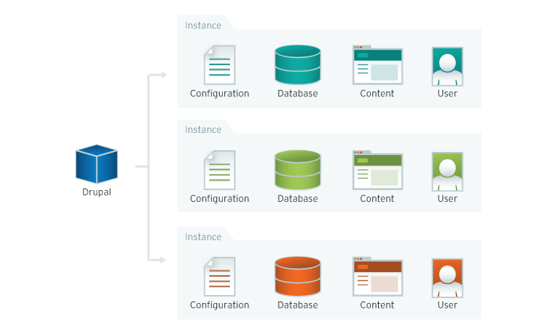
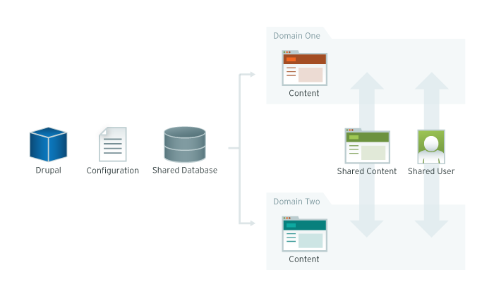
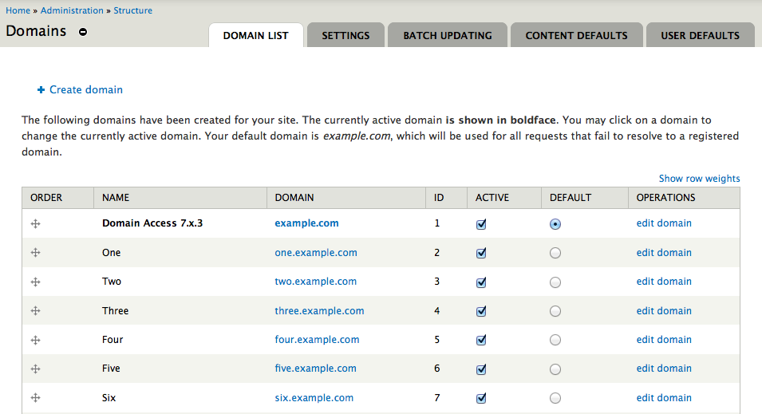
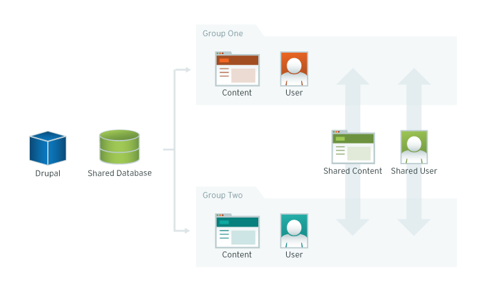
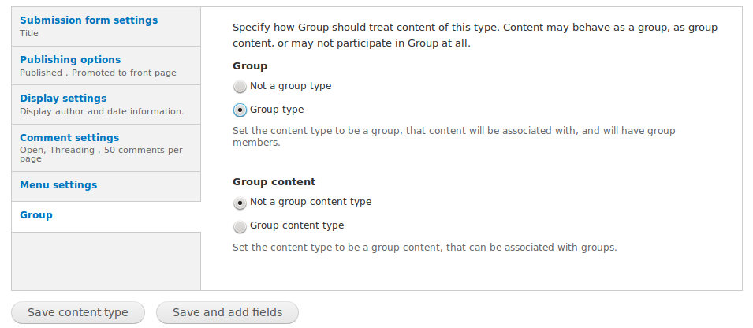
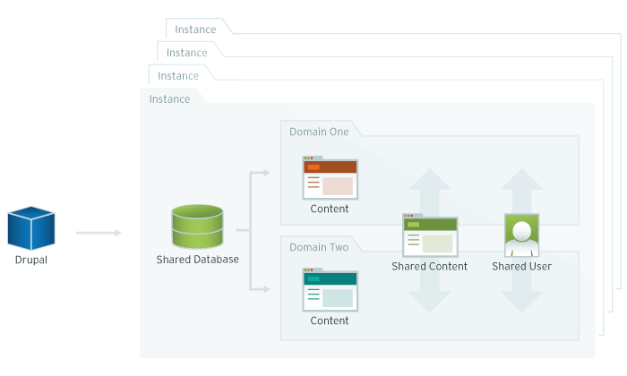

Multi-Headed Drupal
Presented by Larry Garfield (@Crell)
@Crell
- Senior Architect, Palantir.net
- Drupal 8 Web Services Lead
- Drupal Representative, PHP-FIG
- Advisor, Drupal Association
- Loveable pedant
Stop me if you've heard this one...
Drupal University
- 30 Colleges
- 40 Departments each
- Over-worked IT department wants centralization
- Departments want to be special snowflakes
How can we square that circle?
Not rules, more like guidelines

Separate sites
Separate sites
- Never mind, KISS
- Give everyone their own Drupal
Separate sites
Benefits
- Standard platform
- No added complexity
- Complete freedom for each implementation
- Mixed Drupal versions
Drawbacks
- No economy of scale
- No (intrinsic) standardization
- Many sites to have to manage
Features.module
- Dump configuration to code
- Packages of functionality
- Easily distributable (Sometimes)
At least until Drupal 8...
Install profiles
- Since Drupal 5
- Quasi-modules in Drupal 7
- All the power of a module...
- ... plus install wizards
- Create content types
- Create content
- Create roles
- Create users
- Set variables
- ... Do anything that has an API
Install profiles
+
Features
=
Distributions
Distributions
- A web application built with Drupal
- Examples:
- Open Atrium
- Managing News
- Drupal Commons
- OpenScholar
- Conference Organizing Distribution (COD)
- Open Academy
- Your custom distribution here
Example
DEIMS
- Drupal Ecological Information Management System
- International Long-Term Ecological Research Network (ILTER)
- Data collection site-in-a-box
- Local team data
- XML feeds to share data
- No inter-dependence
Multi-site
Multi-site
/
sites/
default/
settings.php
www.drupal.edu/
settings.php
biology.drupal.edu/
settings.php
sites/sites.php
$sites['www.drupal.edu'] = 'main';
$sites['fapi.api.drupal.edu'] = 'fapi';
$sites['multisite.building.drupal.edu'] = 'multisite';
$sites['fundraising.drupalassociation.com'] = 'da_fundraising';
/
sites/
sites.php
default/
settings.php
www.drupal.edu/
settings.php
fapi/
settings.php
da_fundraising/
settings.php
Multi-site
Benefits
- Separate Sites, plus...
- One codebase to update
- Lower memory overhead
- Table sharing (don't do that!)
Drawbacks
- Separate Sites, plus...
- Only one core version
- Multiple module versions are hard
If you have one server admin team...
... use Multi-site
If you have many server admin teams...
... use Separate sites
Example
Washington University St. Louis
- Drupal 6, Pre-features
- Partially built database dump
- 4 themes to choose from
- Clone DB, flush cache, create settings.php, customize
You probably don't mean
multiple sites anyway...
Domain Access
Domain Access
- Access Control module
- Node grants (here be dragons)
- Domain == subsite
- Affects node view
- Suite of modules
Domain Access: Basics
Domain Access
Benefits
- One site to manage
- Content sharing
- Per-domain theme
- Some per-domain config
- Consistent architecture
Drawbacks
- Consistent architecture
- Must use multiple domains
- Uses node access
- Single point of failure
- Everything gets a little bit more complicated...
Example
Interlochen Center for the Arts
Example
Environment America
- One install with Domain Access
- National site, various state-level sites
- Easy content syndication
- Way cheaper than many separate sites
Organic Groups
Organic Groups
- Rewritten for Drupal 7
- Any entity == "group"
- Any entity belongs to a "group"
- Users join groups
Organic Groups
Access control
- Per-group Roles
- Per-group user membership
- Per group node/field edit/delete permissions
Organic Groups
Integration
- Views plugins: Included
- Ctools/Panels Context plugins: Simple
- Very good Chaos suite integration
Organic Groups
Group nodes
Organic Groups
Permissions
Organic Groups
Benefits
- One site to manage
- Content sharing
- Per-group theme
- Only one domain
- Consistent architecture
Drawbacks
- Consistent architecture
- Only one domain
- Still site-wide settings
- Single point of failure
- Everything gets a little bit more complicated...
Example
California State University Northridge
- Every College or Department is a Group
- Group node has settings
- Lots of Entity Reference
- Panels Everywhere / Panelizer
- Separate roles per department
- Very similar themes
Do you even need multiple "sites"?
Just because it's different sites now doesn't mean it has to be
Just because you call it a "site" doesn't mean it is
What does "site" even mean?
What does "site" mean?
- A presence on the web
- An organization's home page
- A path root
- "What I have access to"
Single-site
Access control
Workbench Access
- Divide site into administrative sections
- Sections != path (unless you want it to be)
- Assign roles or users to sections
- Affects edit, not view
Variable themes
- Sections module (D6, needs port)
- Panels
- Panels Everywhere
hook_custom_theme()- ... Or just don't
Single site
Benefits
- No/little mental overhead
- One code base to manage
- Easy on the server admin and site-admin
Drawbacks
- Limited variability between "sites"
- Public understands only a single "site"
- Single navigation hierarchy
Example
Mt. Holyoke College
Mix and Match
Multi-site can host any combination of sites
- Multi-site / OG
- Multi-site / Domain Access
- Multi-site / Workbench Access
- Multi-site / Domain Access / OG
Example
Barnard College
- 50 departments and programs
- One site with Domain Access
- ... and Workbench Access for even finer control

Decisions decisions...
| If you want... | Probably means... |
|---|---|
| Multiple core versions | Separate installs |
| Different content types | Separate installs, multi-site |
| Single user base | Domain Access, OG, Single-site |
| Subdomains | Separate installs, multi-site, Domain Access |
| One domain | OG, Single-site |
| Simplified server admin | Domain Access, OG, Single-site |
| Shared content | Domain Access, OG, Single-site |
| Per-department ACL | Single-site, OG |
| Department autonomy | Separate installs, multi-site (less so OG) |
| Per-department Views | Separate installs, multi-site (less so OG) |
| Staggered migration | Separate installs, multi-site, Domain Access, proxy server shenanigans |
| Per department theme | Separate installs, Multi-site, Domain Access, OG |
| Inexperienced site admins | Separate installs, Single-site |
Remember what we said about guidelines
Larry Garfield
Let's make something good together
Keep tabs on our work at @Palantir
Want to hear about what we're doing?